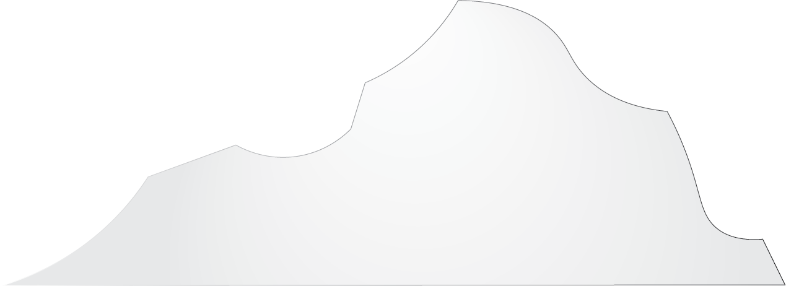

The online web is like an iceberg.
The vastness of the iceberg indicate the many layers that the website is built on.
It can indicate the construction process, the content, the audience
it is public to and the behaviours that may generate.
How the public interprets the piece, the infinite ways to
create and design the web, the system and how
it is able to connect to millions of people.
These considerations are overwhelming, exciting,
and immense
to us yet we should embrace
and explore the vastness of the web.